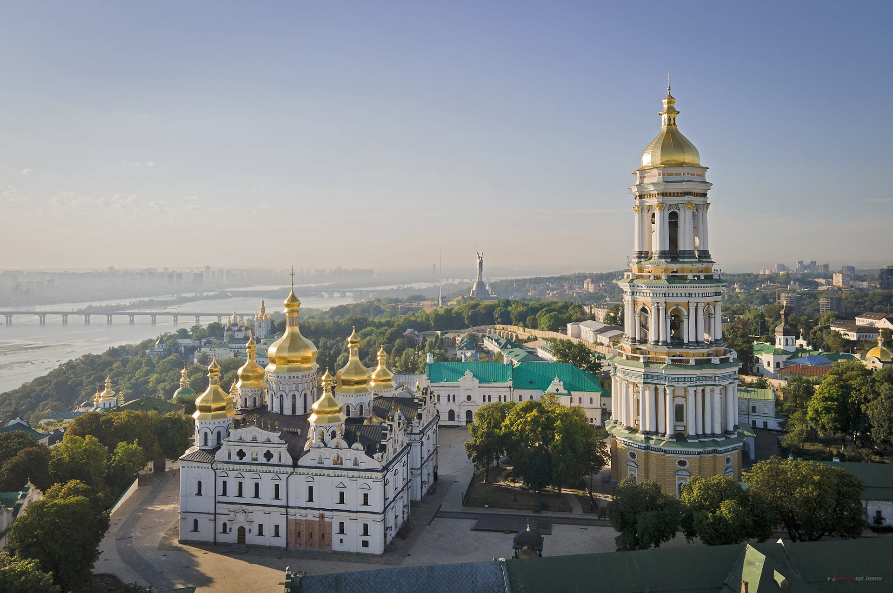
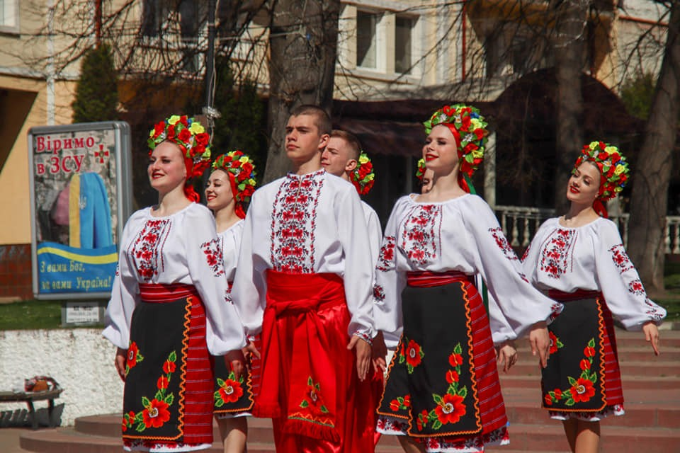

Україна: Країна з Багатовимірною Спадщиною та Живою Культурою
Багатовимірна спадщина
Україна славиться своєю багатою історією, яка налічує тисячоліття. Історичні пам'ятки розкидані по всій території країни, нагадуючи про величні моменти минулого. Скіфські кургани, середньовічні замки, православні монастирі – це лише частка того, що можна побачити в Україні.
Протягом століть Україна була місцем зустрічі різноманітних культурних впливів. Завдяки своєму положенню на шляху торгових маршрутів, вона збагатилася різноманітністю та кольорами різних народів і культур. Це відобразилося у мові, архітектурі, народному мистецтві та традиціях українського народу.
Жива культура
Сучасна культурна сцена України насичена різноманітністю та креативністю. Музика, література, театр, кіно – кожен аспект культури розвивається та процвітає, зберігаючи в собі дух національної спадщини.
Українська музика має свої коріння у народних традиціях, але постійно зазнає впливу світових трендів та напрямків. Від фольклорних колективів до сучасних рок-гуртів, музична сцена України пропонує щось для кожного смаку.
Літературна та кінематографічна сцени також активно розвиваються. Відомі письменники та режисери створюють твори, які не лише збагачують українську культуру, а й привертають увагу міжнародної аудиторії.
Майбутнє України
Україна продовжує свій шлях до розвитку та процвітання. Вона відкрита для нових ідей, інновацій та можливостей. Зберігаючи в собі гордість за свою спадщину, український народ дивиться у майбутнє з оптимізмом та рішучістю.
Завдяки своїм талановитим людям, багатій культурі та потенціалу для розвитку, Україна має всі передумови, щоб продовжувати вражати світ своєю унікальністю та красою. Її майбутнє обіцяє бути яскравим та захоплюючим, і світ з нетерпінням чекає на те, щоб побачити, що принесе завтрашній день для цієї надзвичайної країни.